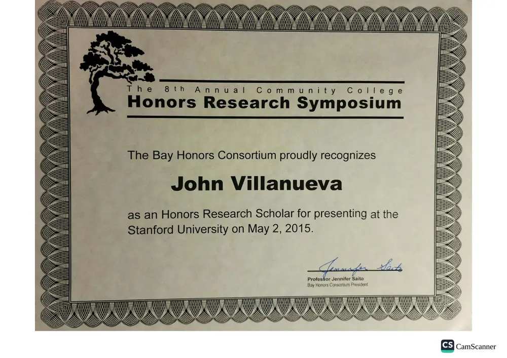
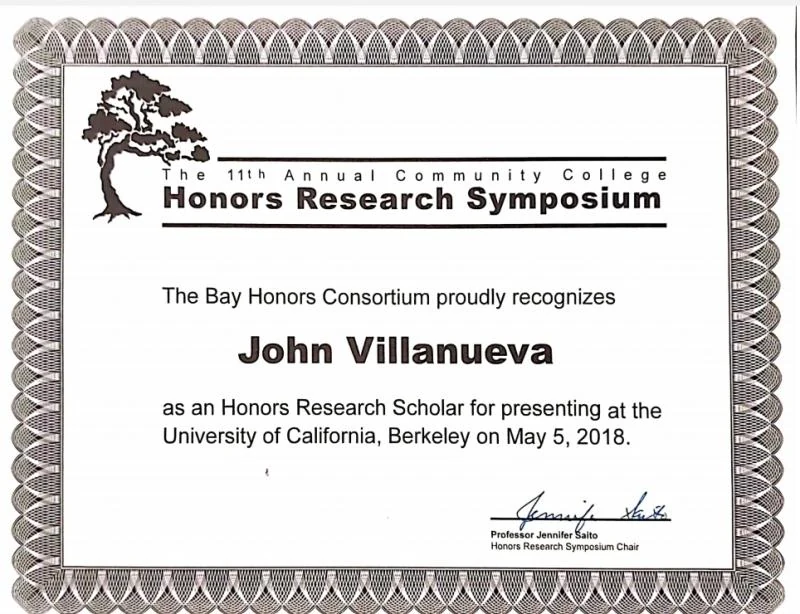

Dino Kart Racer
Prehistoric combat racing
Race AI rivals, collect power-ups, manage damage, and survive collisions in a browser-based kart game.
Play the game →Projects · useful first, interesting second
I build browser games, nursing study tools, language practice, and small web projects. Sometimes the goal is useful; sometimes it is fun. Either way, I like taking an idea far enough that somebody can actually use it.

Featured project · playable now
A prehistoric combat racer built for the browser, featuring rival AI, power-ups, collisions, audio feedback, and a trilobite projectile that behaves with far more determination than its fossil record would suggest.
Live collections
The library includes one kart racer, a math game, a kana trainer, four pharmacology practices, two Spanish lessons, and fourteen Filipino/Tagalog lessons.
Race AI rivals, collect power-ups, manage damage, and survive collisions in a browser-based kart game.
Play the game →Practice medication concepts through four distinct quiz experiences with feedback and review-oriented interactions.
Choose a practice set →A lightweight browser game that turns basic math review into a simple, repeatable challenge.
Start the game →Practice converting familiar romanized sounds into Japanese kana through active recognition.
Practice kana →Two lessons focused on practical language recognition and introductory sentence patterns.
Open Spanish practice →Fourteen interactive quizzes covering vocabulary, sentence patterns, and practical language use.
Browse all 14 lessons →Web experiences
The website and timeline are quieter builds, but they still reflect the same concern for structure, clarity, and revision.
A multi-page home for the professional record, projects, personal interests, and chronology—without cramming everything into one overloaded homepage.
Return to the homepage →A filterable way to view how service, education, business, technology, and healthcare accumulated over time.
Explore the timeline →Presentation receipts
These certificates mark an older version of the same instinct: research a subject, organize the ideas, and explain them clearly in public.

Academic presentation experience connecting research, synthesis, and public explanation.

Recognition as an Honors Research Scholar through the Bay Honors Consortium.
Business-idea development and presentation experience that later informed an interest in practical entrepreneurship and iterative product thinking.
In the lab
I use AI as a practical prototyping partner for research, structure, and early drafts. The interesting part is not the tool itself; it is whether the final result becomes clearer, faster, or more useful.
I use language models to compare sources, outline ideas, debug rough drafts, and move through the blank-page stage faster. Nothing goes public until I have reviewed it, tested it, and decided it still sounds like me.
Build, test, revise
A game, study tool, language quiz, and portfolio page can serve very different purposes. What matters is that each one works, communicates clearly, and improves after contact with real use.